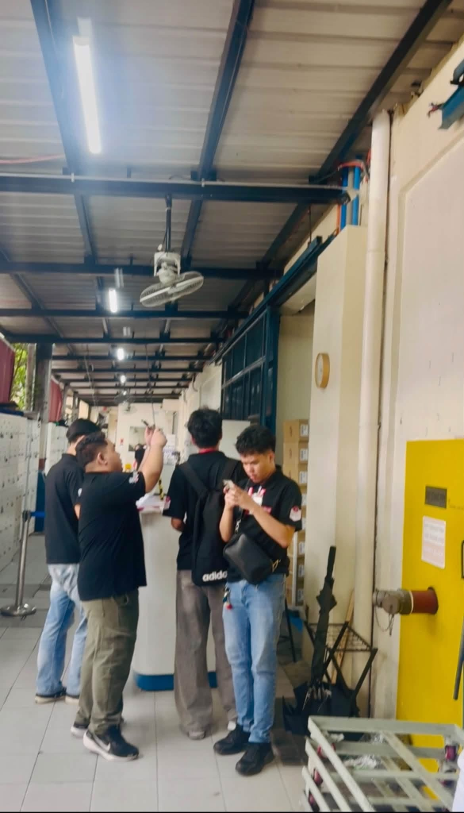
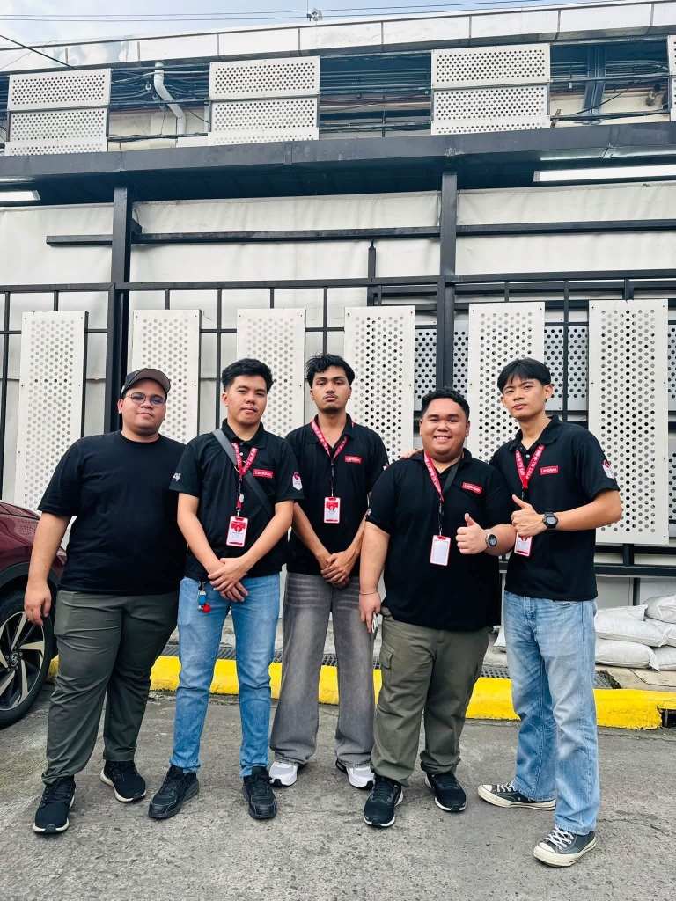
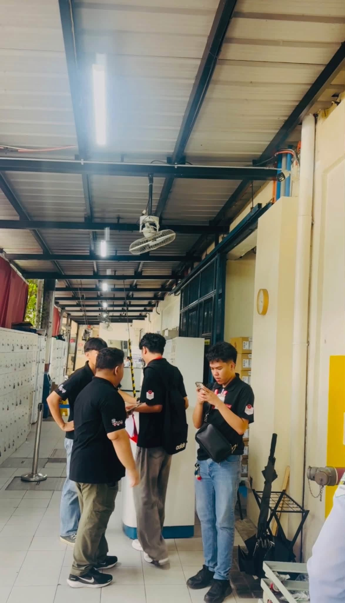

Ongoing CCTV infrastructure work involving layout planning, NVR systems, coaxial and IP cameras, site inspection, equipment checking, cable routing, and technical documentation.
CCTV layout, inspection & technical planning
CCTV / FIELD SERVICE
Planning the CCTV system on site.
Ongoing field work at Tri-Phil International Inc., including CCTV layout planning, NVR and camera checking, coaxial and IP camera inspection, site assessment, and technical planning.

Site assessment

Field team

Equipment inspection
ANDROID APP / AICASE 003
GanapToday
An Android app designed to motivate and support users through AI-powered conversations. Chat with an AI companion based on your preferred vibe, log daily reflections, track streaks, and get weekly reflections to stay grounded.
AI companion · self-reflection · motivation
FEATURES
Your AI tropa for life's daily chaos.
Choose your AI vibe — Funny Best Friend, Motivational Coach, Caring Lola, Strict Asian Parent, Calm Therapist, or Gamer Buddy. Log daily ganap, track streaks, and get weekly reflections.
A web app adapted from The 48 Laws of Power by Robert Greene. Features Taglish commentary, a situation simulator with scenario-based decision making, a strategy analyzer, and a searchable archive of all 48 laws.
An interactive typing speed challenge that measures WPM, accuracy, and consistency. Features multiple difficulty modes, personal best tracking, and a polished dark UI.
Frontend dev · game logic · real-time input
FEATURES
Test your speed. Improve your accuracy.
15s / 30s / 60s time modes, Easy / Normal / Hard difficulty, live WPM tracking, streak counter, and localStorage personal bests.
On-site laptop diagnostics, repair, and B2B technical service support at Lenovo / IPVCYX — handling warranty service, system checks, and field troubleshooting.
On-site technical support
IT SUPPORT / OPERATIONS
Solving the everyday IT roadblocks.
Laptops, printers, IP, DNS, and connectivity support during my Paramount internship.